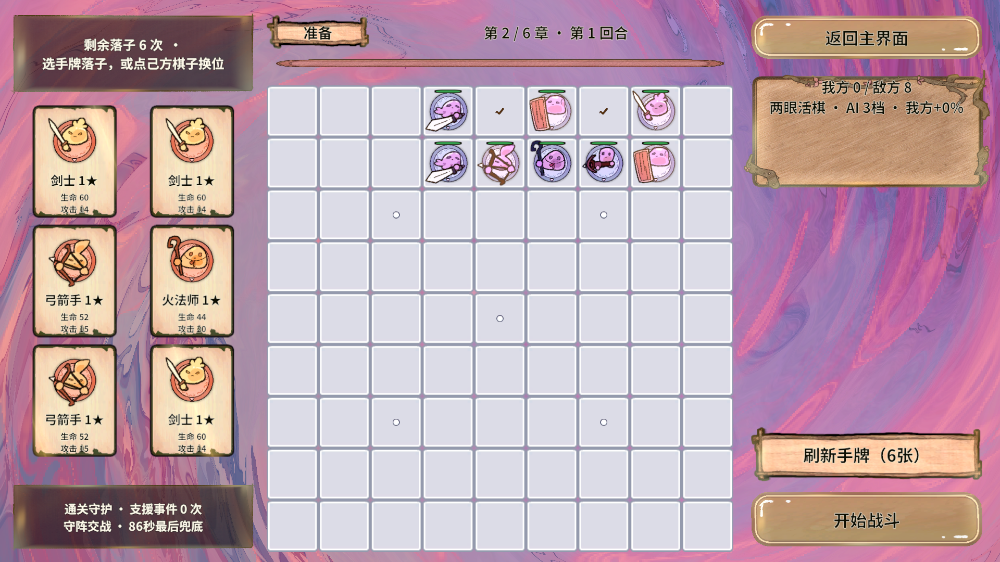

这次不是脚本，是现场判断
整局由 AI 在每一步读取真实局面后决定落点，没有预先写死的启发式规则，也没有使用任何数值强化 GM。执行链是：RevMCP → RevGame 只读查询 GM → 真实指针点击，落子是否成功以「额度下降 + 我方棋子数增加」为判据，而不是"点击已发送"。
- 运行环境
- Unity 2022.3.15f1c1 · Editor PlayMode
- 链路
- RevMCP(GM) → EventSystem 射线 → 业务服务
- 开局方式
- 点击首页「开始」→ 点第一章（真实按钮）
- 测试强化
- 无 · 未使用我方无敌/属性设置等 GM
- 决策依据
- 棋子 / 手牌 / 落点 / 面板 / 战斗状态
- 落子校验
- 每次落子后回读额度与棋子数
点击走 EventSystem 射线，受遮罩与按钮禁用影响；它不是操作系统级鼠标宏，也不冒充手机真机触摸。
11 回合全部真实结算
整章结果
通过11/11 回合 胜方=Player；最后进入 章=2,回=1,阶段=Prepare，说明章节奖励已领取、第二章已解锁。全程未使用跳关、强制胜利或清场类 GM。
| 回合 | 开战敌棋 | 本回合落子 | 战斗用时 | 结算 |
|---|---|---|---|---|
| 1 | 6 | 6 | 84.06 s | 玩家胜利 |
| 2 | 6 | 6 | 37.19 s | 玩家胜利 |
| 3 | 6 | 6 | 25.94 s | 玩家胜利 |
| 4 | 6 | 6 | 73.44 s | 玩家胜利 |
| 5 | 6 | 5 | 76.25 s | 玩家胜利 |
| 6 | 7 | 6 | 80.00 s | 玩家胜利 |
| 7 | 7 | 4 | 74.06 s | 玩家胜利 |
| 8 | 7 | 6 | 79.06 s | 玩家胜利 |
| 9 | 7 | 5 | 74.06 s | 玩家胜利 |
| 10 | 7 | 5 | 81.25 s | 玩家胜利 |
| 11 · Boss | 9 | 6 | 50.00 s | 玩家胜利 · 擒王 |
普通回合上限 90 秒且按剩余血量判胜，所以 73–84 秒的回合属于压线取胜，不是碾压；第 2、3 回合分别只用了 37 秒和 26 秒，是因为当轮落子结构与敌方阵型对得上。
每一手为什么这么下
统一原则按你的要求执行：近战贴到敌人身上（挡刀 + 围气锁死），远程放在远离敌人的后排、并与目标同列。下面只列做出转折判断的回合。
第 1 回合 · 首轮试探
胜 84.06 s手牌 3 剑士 + 3 火法。近战压到 y=6 的敌方阵前沿，火法放 y=2 后排。结果只有 2 个远程活下来——说明前排挡刀有效但输出不够，靠血线拖到压线取胜。
第 2 回合 · 改对位
胜 37.19 s改成"近战正面对位 + 远程按敌方列号排成一条线"：远程站 5/6/7 列，正对敌方 5/6/7 列的敌人。首轮 84 秒 → 37 秒，说明远程的列对位比单纯后退更关键。
第 3 回合 · 围死换伤害
胜 25.94 s敌方血量突然涨到 4 倍（3132–5370）。这时不再追求输出，而是把 4 张近战全部贴脸形成包围，让敌人无气锁死（锁死承受双倍伤害），26 秒结束。这是本局最快的一轮。
第 6 回合 · 处理后场突入
胜 80.00 s敌方多了个 20757 血的盾战直接落在我方后场 (2,4)，正在打我们的脆皮远程。我把 4 张牌分别放在 (1,4)/(3,4)/(2,3)/(2,5) 把它的气全部堵死，剩下 2 张压主线。它被锁死后没有再动过。
第 9、10 回合 · 主动放弃无效手
胜 74.06 / 81.25 s两张盾牌当时显示 0 个合法落点（受眼位与合法落点规则限制）。此时继续找格子只会浪费点击，于是只落 5 张直接开战，把额度留空。
Boss 回合：只有两条气口，堵住就是擒王
Boss 是个 56044 血的 HeavySword 主将，落在 (1,7)，周围还有 8 个护卫。Boss 回合不限时，硬拼 5.6 万血并不划算，正确解法是擒王：主将死亡或被锁死都算玩家胜。
主将的四个气口：(0,7) (2,7) (1,6) (1,8)
逐个试探可落性：#61 → (0,7) YES | #62 → (2,7) NO
#63 → (1,6) YES | #64 → (1,8) NO
结论：围棋眼位规则挡住了右侧两条气口，只能用左侧两条。
打法：把 (0,7) 与 (1,6) 用近战堵死，主将气数清零 → 锁死 → 擒王。
实际落子：近战 65 → (1,6)、66 → (0,7) 堵气；火法 61 → (1,4) 沿 1 列直击主将；其余三张压在外围。开战后 50.00 秒收到玩家胜利，结算面板出现，领取章节奖励（选同名牌）后进入第二章准备。
实际画面
本轮为纯逻辑＋输入链验证，只在通关后补了一张画面：第二章准备界面，作为"第一章确实通关"的现场证据。逐回合的过程截图没有采集，这一点如实说明，不用旧图替代。


第二章准备点击放大 ↗章=2,回=1,阶段=Prepare。异常与限制
两次落子被业务拒绝
已如实记录第 5 回合把法师点到了自己 Archer 所在的 (6,3)，第 7 回合在 GM 短暂未注册时点击失败。两次都表现为"额度不变、棋子数不变"，被校验逻辑识别为未生效，没有误判成成功。
一次 GM 注册竞态
自愈，未复现第 7 回合出现 GM is not currently registered: RevGame/点格子，随后同一回合内的后续调用恢复正常。怀疑与编辑器域重载时序有关，本轮只记录现象，没有做专项复现。
- 本局未使用任何数值强化，因此"压线取胜"反映的是普通难度下的真实手感。
- 只验证了第一章；第二、三章以后未执行。
- 未做帧率、内存、GC 采样，本报告不含性能结论。
- 过程截图缺失，只有通关后一张；视觉验收不构成完整证据链。
未完成项
- Boss 九技能验收需要独立场景与强制施法入口，本轮未执行。
- 第二章及以后章节已进入第二章准备，但未继续游玩。
- 逐回合过程截图本轮只在结束后补了一张画面。
- 真机 / AB 冷启动全部在编辑器 PlayMode + AssetDatabase 直读下完成。
证据与复现
所有结果来自运行期只读 GM（RevGame/面板、RevGame/战斗状态、RevGame/手牌、RevGame/棋子、RevGame/落点）与真实点击（RevGame/点击、RevGame/点格子），未读取或修改内存。
复现方式
# 1) Unity 打开 RevGame.Unity，等待编译完成
# 2) 用 RevMCP 读局面
python Revolution.RevMCP/rev_mcp.py --project "" call gm "RevGame/棋子"
# 3) 真实点击：首页 → 第一章
python ... call gm "RevGame/点击" --json args.json # {"arg0":"HomePanel/btnPlay"}
python ... call gm "RevGame/点击" --json args.json # {"arg0":"LevelSelectPanel/chapter1"}
# 4) 每回合：读棋子/手牌/落点 → 选牌 → 点格子 → 核对额度与棋子数 → 点 btnReady
# 5) 结算后点 SettlePanel/btnContinue；出现 RewardPanel 时点 choice0 报告日期 2026-10-23，时区 Asia/Shanghai。数据来自本次实机运行；后续代码或配置变化不会自动更新本结论。